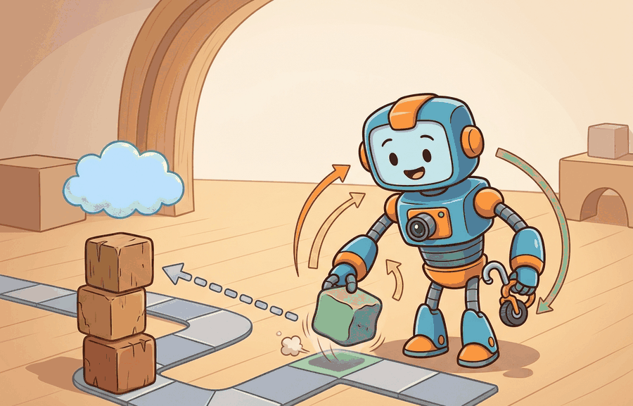

"I can update myself safely, provided someone remembers the word rollback."
A Cautious Continual Learner

This section assumes familiarity with catastrophic forgetting from section 57.2 and the online-adaptation loop from section 57.3. The safety-gate variables depend on the safety-event and intervention concepts introduced in section 54.2. The versioned deployment stack discussed here connects forward to the deployment architecture in section 55.4, where rollout controllers and monitoring dashboards are covered in detail.
A warehouse robot performs flawlessly on Monday. By Friday, after three incremental updates to handle new shelf configurations, it begins clipping corners it used to clear. No single update broke it; the failure emerged across versions, invisible to any one-shot evaluation. Embodied AI systems that learn continuously face exactly this hazard: every update is a small bet, and the house edge only shows in longitudinal data. This section equips you to build and apply a rigorous safety gate, track model quality across versions, and know when to roll back before a good-on-paper update becomes a problem in the field.
Safety in continual learning is mostly about release discipline. A candidate update becomes dangerous not only when it is wrong, but when the system lacks enough versioned evidence to know that it is wrong quickly.
Theory
Prequential evaluation is like a head chef who tastes every dish that leaves the kitchen, not just the recipe on paper. Each small seasoning adjustment seems fine in isolation, but the chef's running palate catches the moment the cumulative drift has tipped from "subtly different" to "wrong." A cook who only taste-tests at the start of a shift and then trusts the written recipe will miss how three tiny salt additions across the evening have made the soup unservable.
As Figure 57.4A illustrates, safe continual learning rests on three pillars: versioned evaluation, staged rollout, and rollback evidence. Prequential evaluation (short for predictive-sequential: test each example before training on it, accumulating a running score) and versioned evaluation track performance as the environment changes over time. A minimal safety gate evaluates
$$G_t = [\Delta_{\text{new}} \ge \tau_{\text{gain}}] \land [F_t \le \tau_{\text{forget}}] \land [S_t \le \tau_{\text{safety}}] \land [\text{rollback\_ready}],$$
where $\Delta_{\text{new}}$ is gain on new tasks, $F_t$ is forgetting, and $S_t$ is safety-event rate. Promotion should require the entire gate to pass. To see why every term matters: practitioners report (as of 2024) that a team tracking only $\Delta_{\text{new}}$ and shipping when gain exceeds threshold tends to discover field regressions within a handful of subsequent updates, while a team gating all four conditions tends to catch the same regressions before any single update leaves the canary zone. In concrete terms, a regression caught at the canary stage typically requires reverting one update and one evidence bundle; the same regression found four updates later can require auditing thousands of robot-hours of logs just to isolate which version boundary introduced the fault.
| Variable | What It Measures | Why It Matters |
|---|---|---|
| $\Delta_{\text{new}}$ | gain on the new distribution | justifies adaptation effort |
| $F_t$ | retained-task degradation | protects prior competence |
| $S_t$ | safety-event or intervention rate | prevents unsafe promotion |
| rollback_ready | operational reversibility | limits blast radius of mistakes |
Worked Example
Figure 57.4B traces how a candidate update moves through this pipeline: shadow evaluation, the four-variable gate, and then either canary rollout or rollback. A warehouse robot update may improve navigation around new shelving layouts, but it should still be blocked if safety-event rate rises or rollback is not prepared.
gate = {
"new_task_gain": 0.07,
"forgetting": 0.02,
"safety_event_rate": 0.0,
"rollback_ready": True,
}
accept = (
gate["new_task_gain"] >= 0.03
and gate["forgetting"] <= 0.03
and gate["safety_event_rate"] <= 0.005
and gate["rollback_ready"]
)
print({"accept": accept, **gate}){'accept': True, 'new_task_gain': 0.07, 'forgetting': 0.02, 'safety_event_rate': 0.0, 'rollback_ready': True}The expected output should support a release decision directly. A model that gains more on new tasks but fails rollback readiness or safety rate should still be rejected.
The promotion gate is basically a bouncer for your model: it does not care how impressive your gains are on the new tasks if you cannot show a valid rollback_ready flag at the door.
- Track each model version against fixed old-task, new-task, and safety panels.
- Compute gain, forgetting, calibration, and intervention rates for each version.
- Promote only through shadow and canary phases.
- Roll back immediately when a gate condition fails.
- Store every version's decision artifact for later audit.
Versioned model registries, rollout controllers, and experiment trackers help only if they preserve per-version evidence, rollback pointers, and panel definitions. A registry without evaluation provenance is just a storage service.
Temporal evaluation is often too short. A candidate may look stable over one day but fail after enough distribution shift, maintenance drift, or operator behavior changes accumulate.
A gate can pass on aggregate metrics while silently regressing on rare but costly events. Consider a robot update that reduces mean navigation time by 8% and holds forgetting at 1.5%, so every headline threshold clears. If the evaluation panel contains only 12 charger-docking attempts (because docking is rare in the shadow period), a 25% increase in docking-retry failures goes undetected. The gate passes; the update ships; field operators begin filing docking incidents within a week. The root cause is a panel that is representative on average but statistically underpowered for the events that matter most. Rare-event slices need their own thresholds and their own minimum sample counts before a gate can be considered complete.
When implementing rare-event slice guards, use scipy.stats.proportion_conftest (or the equivalent statsmodels.stats.proportion.proportion_effectsize power calculation) to compute the minimum sample count before the gate runs, not after. Set a hard floor, for example min_slice_n = 30, and short-circuit the gate with rollback_ready = False if any slice falls below it. A gate that simply skips underpowered slices silently passes on insufficient evidence, which is the failure mode described above.
A fleet Autonomous Mobile Robot (AMR) update may improve congestion handling in a new warehouse layout, but the deployment team should still require a versioned record of old-layout performance, charger-docking reliability, intervention rate, and rollback readiness before expansion beyond a canary zone.
Hardware-aware forgetting metrics (2024-2026). Standard forgetting scores treat the evaluation panel as fixed, but physical deployments violate this assumption because the robot body changes. Recent work from ETH Zurich's Robotic Systems Lab (Mittal et al., "Lift3D: Zero-Shot Lifting of Foundation Features for Closed-Loop Embodied Navigation," 2024, and related hardware-drift studies from the same group) shows that locomotion policies on ANYmal degrade against a fixed reference not because weights change but because joint stiffness shifts with wear. The open direction is to build forgetting metrics that condition on a hardware-state fingerprint extracted from torque telemetry, so that $F_t$ reports policy degradation separately from embodiment degradation.
Foundation-model-seeded continual learning (2024-2026). Large vision-language-action models such as Google DeepMind's RT-2-X and its successors (Embodied AI @ Google, 2024) provide a strong prior that reduces catastrophic forgetting on new manipulation tasks. Active research explores whether continual fine-tuning of these foundation priors can satisfy the four-variable gate with far fewer rollback events than task-specific policies, because the pretrained representations generalize across distribution shifts that would cause a narrow policy to forget.
Continual safety certification (2025-2026). Work from the Safe Robotics Lab at Carnegie Mellon (Dawson et al., "Safeguarded Continual Reinforcement Learning via Control Barrier Functions," 2025) applies control barrier functions as hard constraints during incremental updates so that $S_t$ is bounded by construction rather than monitored retrospectively. Extending this to full fleet deployments where robots share a continual-learning pool while maintaining per-robot CBF certificates is an active open problem.
Open problem for PhD students. No current benchmark captures coupled hardware-policy-environment drift across a multi-month real deployment. A tractable thesis contribution is a dataset and evaluation protocol that co-records ROS 2 joint-torque logs, versioned policy checkpoints, operator intervention events, and scheduled maintenance records on a fleet of at least five robots over six or more months, then derives forgetting and safety-event metrics normalized against the hardware state at each evaluation checkpoint. This would let the community benchmark continual learning against physically grounded reference distributions rather than static test sets.
The gate formula is only as useful as the numbers you plug in. Teams calibrate $\tau_{\text{forget}}$ by examining the historical incident record: if past incidents show that a 4% degradation on charger-docking reliability caused measurable operator overload, then $\tau_{\text{forget}} = 0.03$ is a reasonable ceiling (below the observed pain threshold with a small buffer). Similarly, $\tau_{\text{safety}}$ is often derived from the baseline intervention rate in production, for example, 0.003 interventions per hour, with the gate threshold set at 1.5x that baseline. Without this historical grounding, thresholds are arbitrary and the gate gives false confidence. The "when" this matters most is early in a program, before incident history exists: in that case, use the most conservative values available from the nearest analogous deployment, document that assumption explicitly, and tighten thresholds as evidence accumulates.
Can you state the thresholds for gain, forgetting, safety, and rollback readiness that define promotion in your setting? If not, the release gate is still qualitative rather than operational.
Evaluation over time should also preserve rare-event slices. A candidate update may improve daily averages while regressing on low-frequency but high-cost events such as near-collision recoveries, charger docking retries, or human handoff failures.
In a real deployment stack, teams keep a versioned evidence bundle: a timeline that joins the model registry, shadow metrics, canary allocation, intervention budget, and rollback event log. This bundle is critical for embodied systems because a regression cannot be paused. A robot mid-task with a faulty update may drop a payload or collide before a human intervenes. Without a versioned record, the team cannot tell whether new weights, a hardware change, or operator drift caused the incident. Every promotion event writes its gate-variable snapshot, panel definition, and rollback pointer to a shared artifact store. At incident time, a query joins on the robot's embodiment identifier and first-symptom timestamp to retrieve the exact approved version and its supporting evidence. Prometheus or Grafana dashboards, registry manifests, and replay archives expose drift and rare-event regressions across weeks rather than single evaluation windows. The key question is whether the team can show when competence improved, when risk rose, and which version boundary caused each change.
Many teams operationalize this with PyTorch or JAX model versions, ROS 2 event logs, Prometheus counters for interventions, and Weights and Biases run lineage for the candidate update. The value of this stack is not fashionable tooling; it is the ability to ask a precise question such as which canary batch first showed a rise in monitor alarms, then recover the exact replay slice and rollback target that closed the incident. Without that chain, continual learning remains hard to audit over long horizons.
Long-horizon evaluation also has to account for changing hardware and workflow conditions. A fleet may receive a software update at the same time that wheel wear increases, battery behavior shifts with temperature, or operators begin using a different override pattern. A serious continual-learning audit therefore keeps maintenance records, embodiment identifiers, and operational context linked to the versioned evidence bundle. Otherwise the team may attribute a safety regression to learning when the real cause was a coupled shift in hardware, environment, or human procedure.
A common assumption is that once a continual learning update passes the safety gate at release time, the system is safe indefinitely and no further structured evaluation is required. This is wrong in embodied AI because the operating environment continues to shift after deployment: wheel wear, battery aging, operator habit changes, and gradual distribution shift can all degrade a policy that was genuinely safe on release day. The correct mental model treats the gate as a one-time entry condition, not a permanent safety certificate. Versioned evaluation must run continuously post-deployment, with the same forgetting, safety-event, and rare-event slice checks applied at regular intervals so that silent regressions are caught before they cause physical incidents.
A model that learns without a rollback path is not a continual learner; it is a one-way door.
Safe continual learning depends on versioned evidence, staged rollout, and rollback readiness, not on optimism about adaptation alone.
Define a promotion gate for a humanoid locomotion update. Include thresholds for new-task gain, forgetting, intervention rate, and rollback readiness.
Section References
Kirkpatrick, J. et al. Overcoming catastrophic forgetting in neural networks. PNAS, 2017.
Use for regularization-based retention and its assumptions.
Lopez-Paz, D. and Ranzato, M. Gradient Episodic Memory for Continual Learning. NeurIPS, 2017.
Use for replay-constrained updates and task-stream evaluation.
Project Ideas
Beginner (weekend): Build a versioned safety gate dashboard using Gymnasium: train a Cartpole agent with incremental updates, log gain, forgetting, and episode-failure rate per version into a SQLite evidence bundle, and display a pass/fail gate decision in a simple matplotlib chart. The key challenge is defining a fixed evaluation panel that does not shift between versions so that forgetting is measured against a stable reference.
Intermediate (1-2 weeks): Implement a prequential continual-learning loop for a PyBullet mobile robot navigating an environment where obstacles are added in stages; use ROS 2 to publish intervention events whenever the robot requests a reset, feed those counts into the four-variable gate from this section, and trigger an automatic rollback to the previous checkpoint when any threshold is exceeded. The key challenge is maintaining a versioned evidence bundle that links ROS 2 event logs, policy checkpoints, and gate snapshots so that any incident can be traced to the exact version boundary that caused it.
What's Next?
Next, move to Chapter 58, where these mechanisms connect to broader frontier questions.